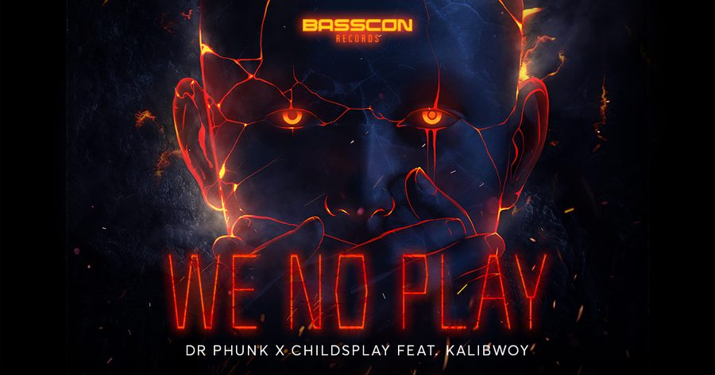

Dr Phunk and ChildsPlay Baptize the Basscon Records Imprint With Anthemic Debut Single “We No Play”


When it comes to its presence in the US, hardstyle is experiencing its big-bang moment, with a newfound appreciation for the genre gradually spreading like clusters of galaxies finding a home in the great unknown. While the genre’s explosive popularity (and incredible events) in the Netherlands is formidable, Stateside hardstyle has simmered slowly, as opposed to detonating loudly. With the rise of Basscon, though, the sound of the hardstyle kick is set to ring loudly across the country.
Basscon is the brand behind a series of parties, club nights, and festival stages that showcase the various sounds of hard dance. The Basscon imprint launched with a stage last year at EDC Mexico, along with the mega Basson Presents Wasteland compilation album.
With the wheels now in motion, a new chapter begins with the label’s debut single, “We No Play,” which sees some pretty serious talent coming together from across multiple genres. The extremely versatile Dr Phunk teams with Dutch urban artists ChildsPlay for a punchy track that also includes Kalibwoy on vocal duties.
What’s on the agenda for hardstyle in 2019? To mark the release of “We No Play,” we grabbed Dr Phunk to talk music and find out where the scene is heading.
Dr Phunk and ChildsPlay’s “We No Play” is available here.
It appears you’ve got your hands full with hardstyle for the remainder of the year. What’s on your agenda as summer approaches?
I’m preparing for yet another crazy festival season. Major events such as Defqon 1, Decibel Outdoor, Creamfields UK, the Qontinent, Daydream Festival—and of course, EDC Las Vegas—are coming up, and I’m super excited for it!
For the sake of those not familiar, give us a quick rundown of the Phunk journey so far.
My journey started in 2008, when I was 18. After only one year of producing, I signed my first record deal and ended up playing on big events such as Defqon1, Reverze, Decibel, and more. Eventually, I got signed to Dirty Workz, run by Coone, and had many successful releases there. Two years ago, I scored five platinum records in the Netherlands and had airplay on national radio and pretty much all clubs/bars/mainstages in Holland and Belgium. It definitely boosted my name in the Netherlands. Shortly after that, I got in touch with Hardwell, who let me remix one of his biggest hits, “Apollo.” He closed EDC Vegas in 2016 with that remix, and ever since, my career exploded. We became really good friends, did two collabs, and now I’m a solid part of his label, Revealed Recordings. This is only the beginning; massive things are about to happen, but time will tell what those things are.
Hardstyle is a niche that’s always existed in its own territory, boasting an incredibly committed fan base that lives the lifestyle. It’s also in constant evolution. What’s your personal take on what defines the hardstyle scene in 2019?
I hope the music will get more danceable again—less overproducing, more effectiveness on the floor. The essence of people going out is to dance, be surrounded by like-minded souls, and to forget their problems.
Hardstyle is a spectrum of sound all its own. Where do you place yourself on this spectrum?
I’m a guy that appreciates many styles of music; this is why I’m so diverse. Doing the same things over and over will get boring. Compare it with eating the same food for a longer period; it will lose its charm after a while. Producing music is my passion, and being diverse is why I never get tired of it. I strive for only four things in my music: energy, quality, originality, and a bombastic signature sound. I also prefer to stay true to myself and what I like to do—this is what makes an artist sound original. I want to create music for both the diehard hardstyle fans and for people who are open to mixing up genres. I believe that music is for everyone.
The scene in your home country is a huge one, to say the least, but you’ve also played some pretty serious gigs in the US. How has this impacted your career, and how would you contrast the scenes in each respective country?
I love playing in the US! It gives me the ultimate rush of being able to play whatever I feel like. The last few years, everything in the Netherlands has been really raw and hard. I do like my raw beats every now and then, but I couldn’t commit myself doing it 24/7. The US definitely opened up a whole new world for me, and it’s lovely to see how many beautiful people and dedicated fans your country has. I never plan any DJ set, so whatever I do, it comes from reading the crowd. I just want to be sure they have a good time!
Your latest single sees you combining powers with both ChildsPlay and Kalibwoy for a rather momentous vocal track. What’s the story behind “We No Play”?
ChildsPlay is a solid name in the Dutch urban industry. They produced the hit song “Magicka” for J Balvin, which led them to win a Latin Grammy. I always adored Kalibwoy’s massive voice after hearing it on several Yellow Claw singles. Working with both artists was a bucket-list thing.
Just as important is the fact that “We No Play” is the debut single for the label imprint of the Basscon brand. You’ve got a bit of a history with Basscon already. Give us the rundown on how did you ended up signing this new record with the label.
My first booking for Insomniac was EDC Mexico last year—what a night! My first year with Insomniac was amazing. I played EDC Las Vegas and the Basscon Pool Party, Wasteland, and I was the support act for my good friend Isaac, who is a legend and an amazing artist. I think it’s important for us as Dutchies, living in the “mecca of hardstyle,” to contribute by building the hard dance scene in other continents—especially North America, which has a dedicated fan base. It’s harder for American hardstyle artists to get noticed by the Dutch scene. A lot of them are super talented and need to be noticed. So, I think it’s our duty, trying to bring the best of our scene to North America, and to spread the oil stain.
What’s on the horizon for Dr Phunk?
A lot of new music, a mini-documentary, huge collabs with DJ Mag top 20 artists, loads of traveling, and many shows around the globe.
Follow Dr Phunk on Facebook | Twitter | SoundCloud
Follow ChildsPlay on Facebook | Twitter | SoundCloud
Follow Kalibwoy on Facebook | Twitter | SoundCloud
Follow Basscon on Facebook | Twitter | SoundCloud